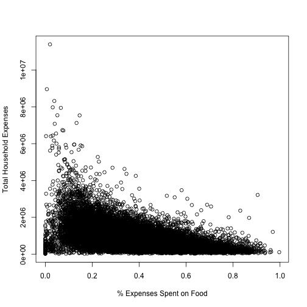

Functionality Included
- Using the 'BudgetFood' dataset from the 'Ecdat' package
- Build a linear model to predict "wfood" (percentage of expenses spent on food)
- Allow application user to input their own values
- "Predict" users own "wfood" percentage
JDScience
Developing Data Products (February 2015)
Functionality Included
Application consists of three files: ui.R, server.R, and helper.R In the helper.R file, the data was loaded, and the model was built:
model <- lm(wfood ~ totexp + age + size + town + sex, data = BudgetFood)
The model demonstrated good fit (even though this page did not...):
summary(model)
##
## Call:
## lm(formula = wfood ~ totexp + age + size + town + sex, data = BudgetFood)
##
## Residuals:
## Min 1Q Median 3Q Max
## -0.60931 -0.08809 -0.00964 0.07991 1.17272
##
## Coefficients:
## Estimate Std. Error t value Pr(>|t|)
## (Intercept) 3.672e-01 5.164e-03 71.122 < 2e-16 ***
## totexp -1.385e-07 1.529e-09 -90.602 < 2e-16 ***
## age 2.169e-03 6.284e-05 34.521 < 2e-16 ***
## size 2.191e-02 5.663e-04 38.694 < 2e-16 ***
## town -1.804e-02 7.363e-04 -24.500 < 2e-16 ***
## sexwoman -8.329e-03 2.688e-03 -3.098 0.00195 **
## ---
## Signif. codes: 0 '***' 0.001 '**' 0.01 '*' 0.05 '.' 0.1 ' ' 1
##
## Residual standard error: 0.1337 on 23965 degrees of freedom
## (1 observation deleted due to missingness)
## Multiple R-squared: 0.3489, Adjusted R-squared: 0.3487
## F-statistic: 2568 on 5 and 23965 DF, p-value: < 2.2e-16
output$Xprediction <- renderPrint({
input$predict
isolate(percent(predict(model, newdata = data.frame(totexp = input$IscaledExp*200,
age = input$Iage, size = input$Isize,
town = input$Itown, sex = input$Igender,
stringsAsFactors = TRUE))))
})
Note: The overall relationship between food cost and total expenses can be seen as follows...
plot(BudgetFood$wfood, BudgetFood$totexp,
xlab = "% Expenses Spent on Food", ylab = "Total Household Expenses")
